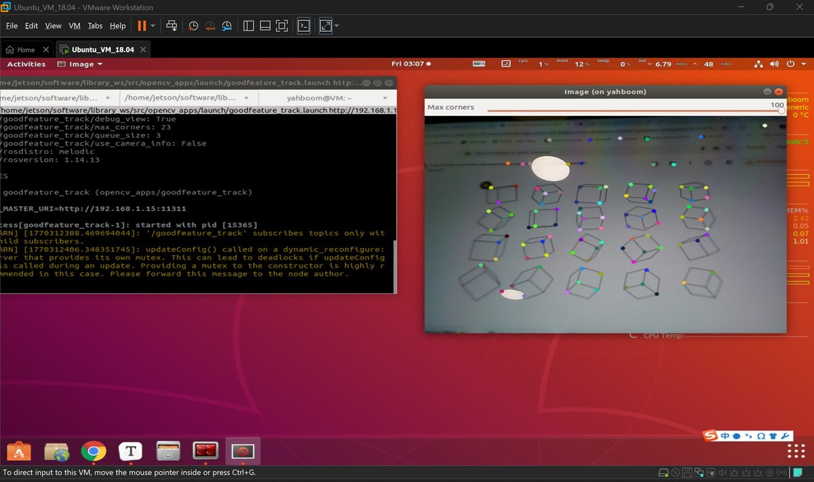
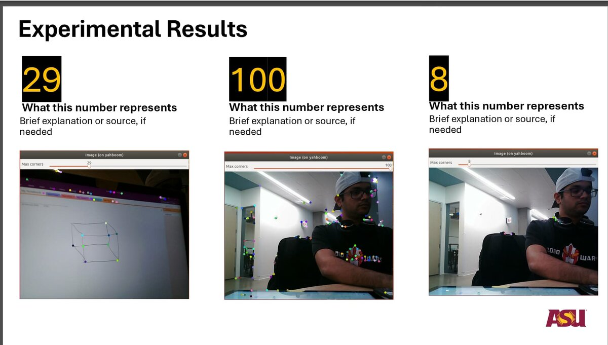

Feature Point Tracking
using OpenCV
ROS + Computer Vision Pipeline on ROSMASTER X3




Project Overview
This Systems Engineering midterm project implemented a complete ROS perception pipeline on the ROSMASTER X3 platform using an Astra RGB camera and OpenCV's good feature tracking algorithm. The system detects and visualizes strong corner points using the Shi-Tomasi method for real-time feature point extraction - a foundational technique used in visual odometry, SLAM, and object tracking applications.
Project Objectives
- Implement complete ROS perception pipeline from sensor input to feature visualization
- Apply Shi-Tomasi Good Features to Track algorithm for corner detection
- Achieve real-time feature point detection and publish structured numerical outputs
- Analyze parameter sensitivity (max_corners) on feature density and tracking robustness
- Demonstrate modular ROS architecture separating sensing, processing, and visualization
System Architecture
The system consists of three main subsystems integrated through ROS publish-subscribe architecture:
1. Sensor Interface (/astra_camera)
- Connects ROS to physical RGB camera hardware
- Continuously captures and publishes image frames as sensor_msgs/Image
- Forms the input to the perception pipeline
2. Vision Processing (/goodfeature_track)
- Core opencv_apps node applying Shi-Tomasi algorithm
- Converts ROS images to OpenCV format via cv_bridge
- Detects corner features based on minimum eigenvalue strength
- Publishes annotated images and feature coordinates
3. Visualization (/rqt_image_view)
- Real-time display of detected feature points
- Experimental validation and parameter tuning interface
Technical Implementation
Shi-Tomasi Algorithm
The Good Features to Track method identifies high-gradient regions suitable for tracking by analyzing the autocorrelation matrix at each pixel. Unlike the Harris detector, Shi-Tomasi uses the minimum eigenvalue for corner scoring: R = min(λ₁, λ₂)
Algorithm parameters:
- max_corners: Maximum number of strongest features to return (default: 23)
- quality_level: Minimum eigenvalue threshold (0.01 = 1% of maximum)
- min_distance: Minimum Euclidean distance between detected corners (10 pixels)
- block_size: Neighborhood size for derivative covariance calculation (3×3)
ROS Topics & Message Flow
- /image (sensor_msgs/Image) - Raw camera stream input
- /goodfeature_track/image (sensor_msgs/Image) - Annotated output with detected corners
- /goodfeature_track/corners (opencv_apps/Point2DArray) - Feature coordinates for downstream use
- /goodfeature_track/parameter_updates - Dynamic reconfiguration interface
Experimental Results
Testing with different max_corners values revealed key performance trade-offs:
- max_corners = 8: Low computational load, suitable for low-texture environments, but reduced tracking redundancy
- max_corners = 29: Balanced feature density with good spatial coverage
- max_corners = 100: High feature density improves motion estimation accuracy but increases computational cost
Tools & Technologies
Hardware: ROSMASTER X3 Platform, Astra RGB Camera (Orbbec)
Software: ROS (Robot Operating System), OpenCV, opencv_apps, cv_bridge, rqt_image_view
Algorithms: Shi-Tomasi Good Features to Track, Eigenvalue Analysis, Corner Detection
Languages: C++, Launch XML, ROS Message Definitions
Key Learnings
This project demonstrated the power of ROS's modular publish-subscribe architecture for robotics perception systems. Feature point extraction serves as a foundational primitive for higher-level perception tasks like visual odometry and SLAM. The modular architecture enables clean debugging and straightforward system integration.